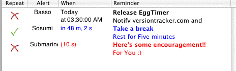

| | How to use the Reminder Window |
The Reminder Window is the first window you will see when you run EggTimer.
It contains a table which displays the current Reminders set or saved.
Toolbar Icons
Several buttons exist on the window to assist you.
 Adds a new Reminder
Adds a new Reminder Edits the selected Reminder
Edits the selected Reminder Stops/Cancels the selected Reminder
Stops/Cancels the selected Reminder
Reminder text coloring
EggTimer also provides feedback on the status of a Reminder based on Reminder text coloring.
You may choose to reset it by selecting it and clicking on the Reset toolbar icon.
Here's an example of what the Reminder text coloring looks like:

Status, Alert, Time, and Message
This will show the Reminder type whether it is active or not.
: The Reminder is set to repeat
: The Reminder is not set to repeat